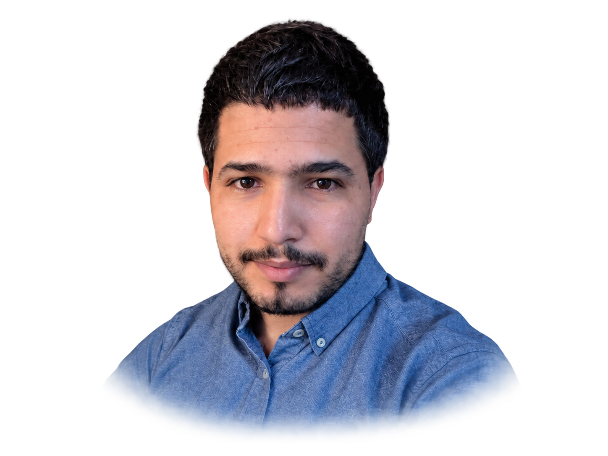

Yassine Ait Mohamed
I am a PhD candidate in Mathematics at the University of Sherbrooke, under the supervision of Prof. Maxence Mayrand. Before that, I was a PhD student at the University of Sidi Mohamed Ben Abdellah, supervised by Prof. Lahcen Oukhtite.
My current interests include Poisson geometry, shifted symplectic geometry, algebraic geometry, Lie theory, topological quantum field theories, and derivations of graded rings.

Tools